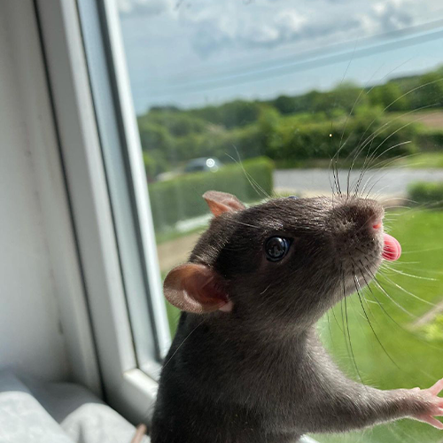
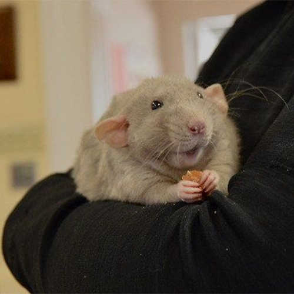
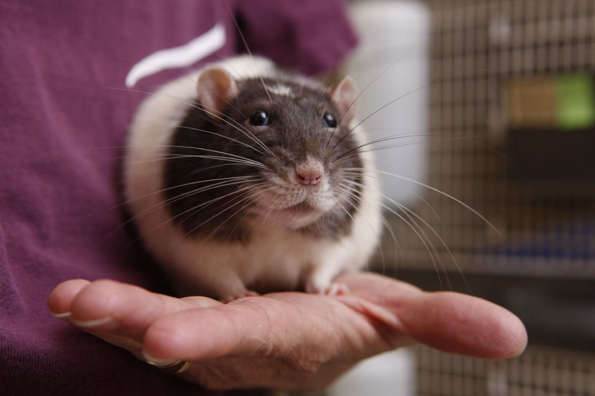
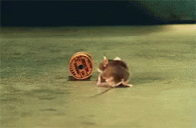
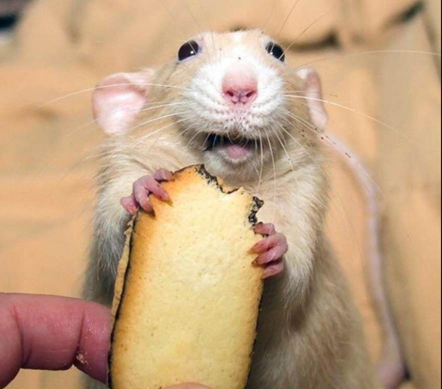

There is a common misconception that rats are filthy animals from the sewers but that is far from the truth. While rats might not be as popular as cats and dogs, they can be had as pets too. If you are still unsure whether to get a rat or not, here are 5 reasons to help you make up your mind.
1. Low maintenance
Rats are very easy to take care of and are perfect for those on a tight budget. Most of the time they will be socializing with other fellow rodents inside their nests, being most active at night. Unlike most pets, they don't need to go out for walks, grooming, or pet them as often as you would a cat.
2. Emotional support
If you need emotional support in this time of crisis, you can confidently rely on your rodent companion. Nurturing and caring for your rat will bring emotional and psychological fulfillment, as well as tension and stress relief by just caressing your furry friend's snout.
3. Easy to understand
Perhaps one of the most communicative pets out there, second only to dogs. A rat's body language is quite easy to read and they make very distinct noises depending on their needs.
4. House-trainable
Ever dreamed of pulling tricks like Mr. Jingles in the The Green Mile movie? I have great news for you, this is easily achievable with a little bit of training every now and then. If you'd like to learn more, the youtuber "Shadow The Rat" put together an extensive tutorial playlist on rat tricks, check it out.
5. Squeaking
Yes, squeaking! A rat's squeak is not only comforting for its owner, but also possesses many healing properties. Their vocalization ranges from 200hz to 50khz and has been proven to lower blood pressure, promote bone strength, heal muscle and ligament injuries and decrease symptoms of dyspnea.
